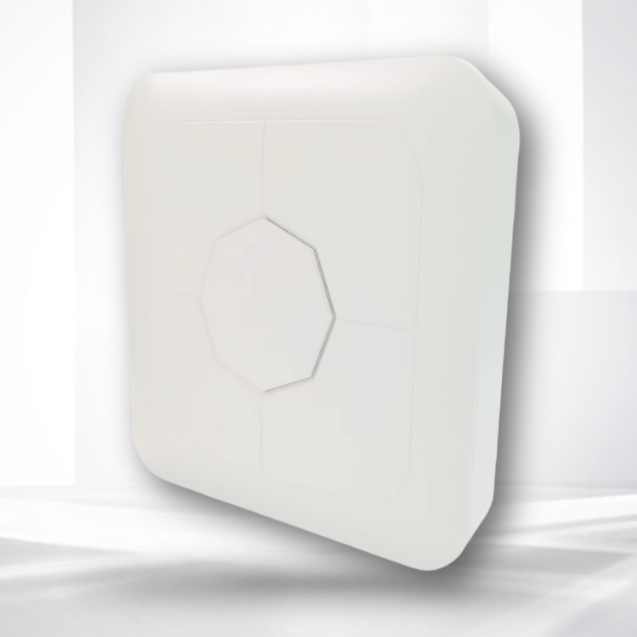
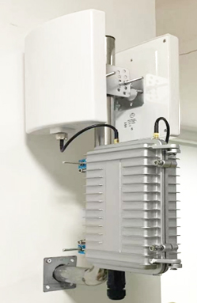
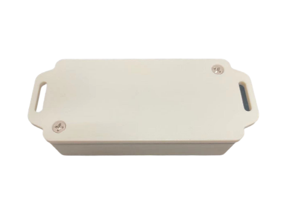

01
< 0.5 m
Indoor AoA positioning
JJ-IS40BXPA · nominal, unobstructed
INDUSTRIAL SPATIAL INTELLIGENCE
Bluetooth, AoA, UWB and low-power IoT technologies connect your warehouse, industrial campus or tunnel with hardware and positioning options designed for the setting.
Tag ID: #A102
CEP95: 8.2cm
Simulated values and refresh rate illustrate the interface, not measured product performance.
< 0.5 m
JJ-IS40BXPA · nominal, unobstructed
30 cm
Outdoor dual-channel station · nominal
BLE + UWB
Match terminals, stations and firmware
IP67 / 68
Model-specific · refer to specifications
OUR HARDWARE / HARDWARE
Positioning stations, connectivity gateways and versatile terminals for different accuracy and coverage needs.

JJ-IS40BXPA
Resolve direction. Locate with confidence.

JJ-U Dual Channel
Maintain location awareness along tunnels.

JJ-IP32BU
Dual-mode tracking for detailed asset visibility.
BUILT AROUND YOUR SCENARIO / Solutions
Explore zone detection, direction finding and UWB positioning to match the conditions on your site.
BLUETOOTH BEACON
Build spatial visibility with lightweight deployment.
Asset inventory · Room-level management · Personnel zone counts
BLUETOOTH ANGLE OF ARRIVAL
Resolve direction to reveal a more precise location.
Medical equipment · Tools and fixtures · Personnel tracks
UWB BEACON ARCHITECTURE
Use precise timing to understand position.
Production assets · Mobile tools · Logistics handling
TIME DIFFERENCE OF ARRIVAL
One broadcast. Multiple synchronized observations.
Large warehouses · Production floors · Personnel and asset tracks
PHASE DIFFERENCE OF ARRIVAL
Use phase differences to understand direction.
Passage direction · Local target guidance · Range and angle fusion
LINEAR SPACE POSITIONING
Keep location continuous along the work route.
Construction tunnels · Utility corridors · Metro sections
LET’S BUILD YOUR POSITIONING SYSTEM
Plan your site survey, hardware selection and platform integration with Jinju.